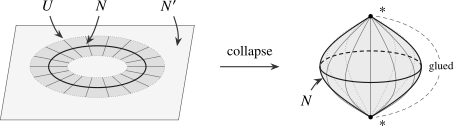

Let us make Pontryagin’s construction from the introduction precise, so as to see what has to be modified in the absence of a framing. Suppose a closed \(n\)-manifold \(M\) is embedded in \(\R ^{n+k}\) and that its normal bundle has been trivialized, so that \(M\) admits a tubular neighborhood identified with \(M \times \R ^k\). Collapsing everything outside this tubular neighborhood gives a pointed map \[ S^{n+k} \longrightarrow (M \times \R ^k)^+ \cong M_+ \wedge S^k \longrightarrow S^k, \] and hence, after passing to stabilizations, an element of the stable stem \(\pi _n(\S ) = \pi _0\Hom _{\Sp }(\S [n],\S )\). Without a trivialization there is no map to \(S^k\): the collapse map remembers the normal directions of \(M\), and these vary from point to point. Thom’s remedy is to replace the target \(S^k\) by a pointed space built out of the normal bundle itself, obtained by compactifying each fiber separately and then gluing all of the resulting points at infinity into a single basepoint.
Construction 10.1.1 (Fiberwise one-point compactification). Let \(p\colon E \to X\) be a real vector bundle of rank \(n\). We define its fiberwise one-point compactification \(S^E\) as the topological space obtained from \(E\) by forming the one-point compactification fiberwise, replacing \(\R ^n\) with \(S^n = \R ^n \cup \{\infty \}\) in each fiber. More precisely, given a local trivialization \(\{\phi _i\colon U_i \times \R ^n \to p^{-1}(U_i)\}_{i \in I}\) of \(E\), we define \(S^E\) by gluing together the spaces \(U_i \times S^n\) along the transition functions: for \(x \in U_i \cap U_j\), the map \(\phi _j^{-1} \circ \phi _i\colon \{x\} \times \R ^n \to \{x\} \times \R ^n\) extends uniquely to a homeomorphism \(\{x\} \times S^n \to \{x\} \times S^n\) fixing the point at infinity. One can show \(S^E\) is independent of the choice of local trivializations of \(E \to X\).
The space \(S^E\) comes equipped with a map \(S^E \to X\). The ‘points at infinity’ assemble into a continuous section \(s_{\infty }\colon X \to S^E\).
Definition 10.1.2 (Thom space). Let \(p\colon E \to X\) be a real vector bundle. We define the Thom space \(\Th (E)\) as the quotient of \(S^E\) by the points at infinity: \[ \Th (E) := S^E/s_\infty (X). \]
Remark 10.1.3. Given a metric on \(E\), one obtains a homeomorphic description of \(\Th (E)\) as the quotient \(D(E)/S(E)\), where \(D(E)\) and \(S(E)\) denote the unit disk and sphere bundles with respect to the metric. The homeomorphism is given by sending a vector \(v\) to \(v/(1+\|v\|)\) in each fiber. This is often taken as the definition, but has the disadvantage of requiring an auxiliary choice of metric.
Remark 10.1.4. If \(X\) is compact Hausdorff, the inclusion of \(E\) induces a homeomorphism \(E^+\cong \Th (E)\). Indeed, a neighborhood of the collapsed section in \(\Th (E)\) has compact complement because \(S^E\) is compact Hausdorff, so the quotient topology at the basepoint is the one-point compactification topology.
The key observation is that the Thom space of a trivialized bundle is an honest \(n\)-fold suspension:
Example 10.1.5 (Suspension as Thom space). Let \(E = X \times \R ^n\) be the trivial rank \(n\) vector bundle over \(X\). Then \(\Th (E) \cong X_+ \wedge S^n \cong \Sigma ^n(X_+)\).
For a general rank \(n\) bundle \(E\), the Thom space \(\Th (E)\) differs from \(\Sigma ^n(X_+)\) only in the way the fiber spheres are glued to one another. We will therefore think of \(\Th (E)\) as a twisted suspension of \(X_+\), twisted by \(E\).
Example 10.1.6. Let \(E \to X\) and \(E' \to X'\) be vector bundles. Then their product \(E \times E' \to X \times X'\) is again a vector bundle (called their external direct sum) and there is an isomorphism of pointed spaces \[ \Th (E \times E') \cong \Th (E) \wedge \Th (E'). \] To see this, equip \(E \times E'\) with the metric \(\|(v,w)\| = \max (\|v\|,\|w\|)\). Then the disk bundle \(D(E \times E')\) is homeomorphic to the product \(D(E) \times D(E')\), and under this homeomorphism the sphere bundle \(S(E \times E')\) corresponds to the subspace \[ D(E)\times S(E') \cup S(E) \times D(E') \] of the product. Passing to quotient spaces then proves the claim.
Construction 10.1.7 (Functoriality of Thom spaces). Consider a fiberwise injective morphism of rank \(n\) vector bundles, i.e. a commutative diagram
in which \(\widetilde {f}\) induces injective \(\R \)-linear maps \(E_x \hookrightarrow E'_{f(x)}\) on fibers. Then the map \(\widetilde {f}\) induces a map \(S^{E} \to S^{E'}\) on fiberwise one-point compactifications, which preserves the sections at infinity and hence induces a continuous map \[ \Th (\widetilde {f}) \colon \Th (E) \to \Th (E'). \]
We can now carry out the collapse construction in the generality we will need. We isolate it as a separate construction, since it is used again in the proof of Atiyah duality in Section 11.3.
Construction 10.1.8 (Pontryagin–Thom collapse map). Let \(i\colon N \hookrightarrow N'\) be a smooth embedding of smooth manifolds, with \(N\) compact, and let \(\nu (i)\) denote its normal bundle. Choose a tubular neighborhood, given by an open neighborhood \(U \subseteq N'\) of \(N\) and a diffeomorphism from a neighborhood of the zero section in \(\nu (i)\) onto \(U\). Collapsing the complement of a smaller tubular neighborhood to the basepoint gives a pointed map \[ \PT (i)\colon N'_+ \longrightarrow \Th (\nu (i)), \] called the Pontryagin–Thom collapse map. Its homotopy class is independent of the auxiliary choices. If \(N'\) is equipped with a basepoint away from \(N\), we may choose the tubular neighborhood of \(N\) to avoid this basepoint, giving a pointed map \[ \PT (i)\colon N' \longrightarrow \Th (\nu (i)). \]

For a framed embedding, the normal bundle is trivialized and \(\Th (\nu (i)) \cong \Sigma ^k(N_+)\), so that we recover Pontryagin’s construction. In general the target depends on \(\nu (i)\). The next step is to make it independent of the manifold by passing to the universal bundle.
Example 10.1.9. Let us consider the Grassmannian \(\Gr _n(\R ^\infty )\) of \(n\)-dimensional subspaces of \(\R ^\infty \). By the real analogue of the Grassmannian classification theorem recorded in Remark 9.2.22, this space is a model for the classifying space \(BO(n)\) and classifies rank \(n\) real vector bundles over paracompact Hausdorff spaces. It is a cell complex by its Schubert cell decomposition. The universal bundle \(\gamma _n\) over \(\Gr _n(\R ^\infty )\) has as total space \[E_n = \{(V,v) \in \Gr _n(\R ^\infty ) \times \R ^\infty \mid v \in V\}\] with the projection map sending \((V,v)\) to \(V\). The fiber over a point \(V \in \Gr _n(\R ^\infty )\) is precisely the \(n\)-dimensional vector space \(V\) itself. The Thom space \(\Th (\gamma _n)\) is the space of pairs \((V,v)\) where \(v \in V\) has length \(\leq 1\), modulo those pairs where \(v\) has length exactly \(1\).
The Thom spaces \(\Th (\gamma _n)\) are particularly important: every rank \(n\) vector bundle over a paracompact Hausdorff space is pulled back from \(\gamma _n\) by Remark 9.2.22, so its Thom space admits a map to \(\Th (\gamma _n)\) via Construction 10.1.7. Composing this with the collapse map from Construction 10.1.8 thus produces maps from manifolds into these Thom spaces. They are moreover compatible as \(n\) varies, in the following sense.
Construction 10.1.10 (The prespectrum \(\MO ^{\pre }\)). Consider the canonical inclusion \[ \Gr _n(\R ^{\infty }) \hookrightarrow \Gr _{n+1}(\R \times \R ^{\infty }) \cong \Gr _{n+1}(\R ^{\infty }), \quad V \mapsto \R \oplus V. \] The pullback of \(\gamma _{n+1}\) along this inclusion is the product bundle \(\gamma _n \times \ul {\R }\), and in particular we obtain a pointed continuous map \[ \Sigma (\Th (\gamma _n)) \cong \Th (\gamma _n \times \ul {\R }) \to \Th (\gamma _{n+1}). \] By adjunction, this defines a map \(\sigma _n\colon \Th (\gamma _n) \to \Omega (\Th (\gamma _{n+1}))\), turning the sequence of pointed animae \((\Pi _{\infty }\Th (\gamma _n))\) into a prespectrum, which we will denote by \(\MO ^{\pre }\).
Applying spectrification (Proposition 4.3.29) to \(\MO ^{\pre }\) produces a spectrum, and this is the classical construction of \(\MO \) going back to Thom (1954). Instead of taking this as our definition, the next section gives a construction of the Thom spectrum which requires no auxiliary choices and applies to virtual bundles; we shall identify the two in Theorem 10.2.23.
Generated from the authoritative LaTeX source.